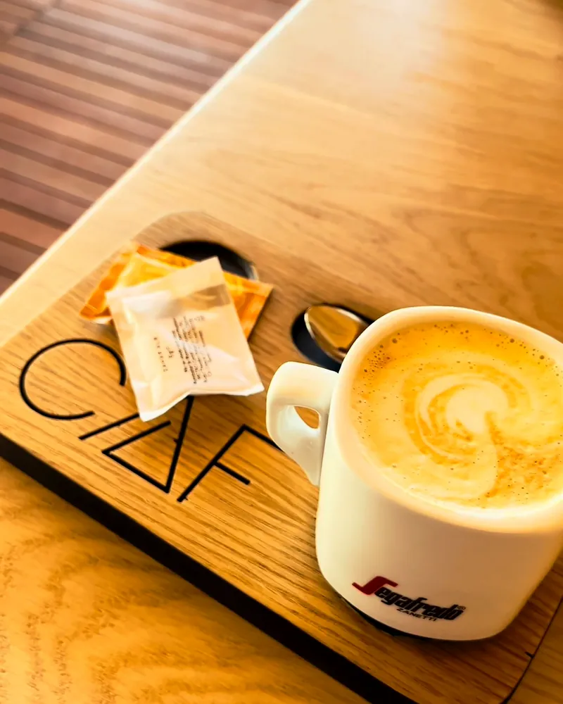

Cafea

CappuccinoPreferata casei
14 leiEspresso cu lapte spumat fin. Merge oricând, dar dimineața parcă e mai bun.

Espresso
9 leiScurt și intens, pentru o pauză rapidă.

Flat white
16 leiEspresso dublu și puțin lapte catifelat.


Băuturi reci
Mojito fără alcoolPreferata casei
20 leiMentă, lime și multă gheață.
Iced latte
17 leiEspresso și lapte rece, turnate peste gheață.
Fresh & limonade
Limonadă cu mentă
18 leiLămâie, mentă proaspătă și gheață.
Fresh de portocale
19 leiPortocale stoarse pe loc.
Patiserie & desert

CroissantPreferata casei
12 leiRumen pe dinafară, moale pe dinăuntru.
Prăjitura zilei
19 leiSe schimbă des. Întreabă la bar ce avem azi.